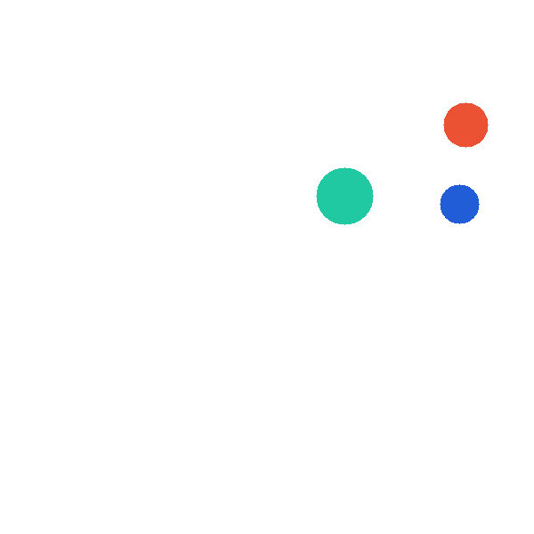
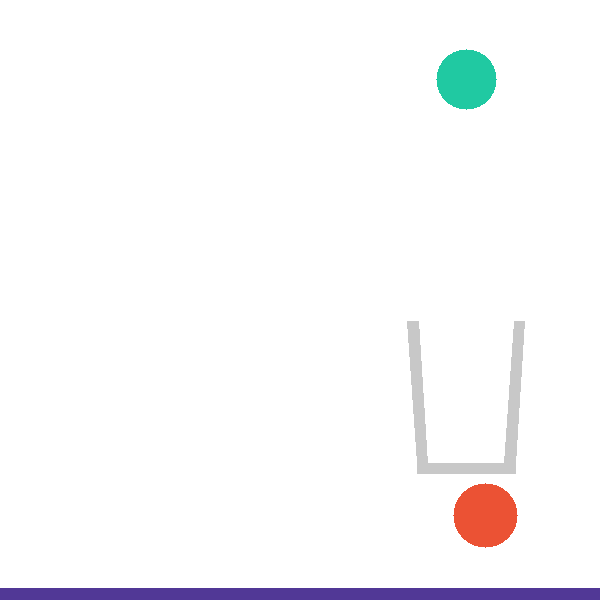
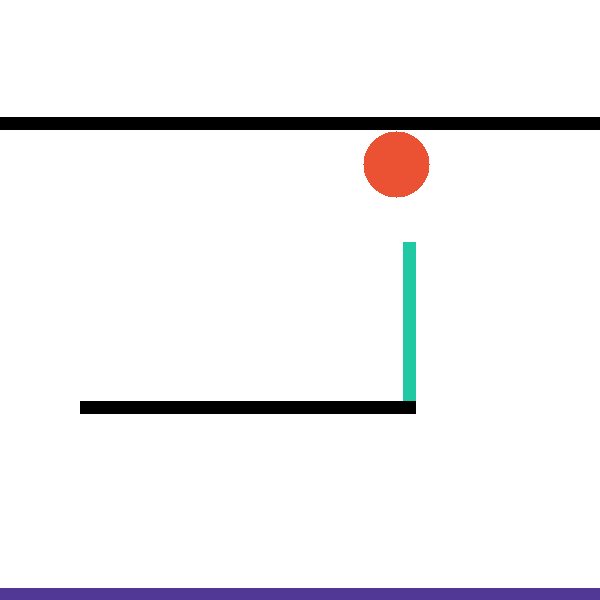

Level-specific tools

catapult Tier 2 · hard
A green ball rests on a pivoting arm; it must reach the blue ball in a basket on a far ledge, past a ceiling blocker.
describe_scene_geometry()State informationStrategy-neutral geometric inventory with no prescriptive advice: all balls (position, radius, dynamic), all bars (centre, angle, length, dynamic) and baskets, plus the key green–blue distance and the success condition. A first-pass survey before committing to a strategy.
Example output (logged agent call, catapult seed 101)
>>> describe_scene_geometry()
=== Scene Geometry ===
World bounds: x ∈ [-5, 5], y ∈ [-5, 5]
Balls:
green_ball: pos=(-3.15, -0.53), r=0.20, dynamic=True
blue_ball: pos=(3.50, -2.69), r=0.47, dynamic=True
black_ball: pos=(-1.17, 4.60), r=0.40, dynamic=False
gray_ball: pos=(-1.22, -1.63), r=0.70, dynamic=True
Bars:
ledge: pos=(3.50, -3.56), angle=1.8°, len=3.00, dynamic=False
black_platform: pos=(-1.82, -2.43), angle=0.0°, len=3.00, dynamic=False
gray_platform: pos=(-1.22, -0.83), angle=0.0°, len=4.25, dynamic=True
Baskets:
basket: pos=(3.50, -3.36), dynamic=True
Key distances:
green↔blue: 6.99
Success condition: green_ball ↔ blue_ball for 3.0s
==================================================predict_first_contact(x, y, radius)SimulationA cheap pre-check (≤ 90 steps, about 1.5 s of simulated time): placement validity, the first object the red ball hits, the contact step, approach speed, contact point and surface normal. Confirms the red ball reaches the catapult arm before a full simulation.
Example output (logged agent call, catapult seed 101)
>>> predict_first_contact({'x': 0.28, 'y': 1.0, 'radius': 1.5})
=== Predicted First Contact ===
placement_valid: True
red_ball drop: x=0.280, y=1.000, radius=1.500
first_contact_object: gray_platform
contact_step: 12
approach_speed: 1.700
contact_point (approx midpoint): (-0.471, -0.016)
contact_normal (red->other inverted): (0.681, 0.732)trace_green_ball(x, y, radius)SimulationA lighter probe that samples only the green ball: its (x, y) waypoints every 30 steps (up to 600 steps) with a start / end / peak summary. Stops early once the ball settles or the level is solved. Answers “where does the green ball go?”
Example output (logged agent call, catapult seed 101)
>>> trace_green_ball({'x': 0.28, 'y': 1.0, 'radius': 1.5})
=== Green Ball Trajectory (steps run: 240) ===
red_ball drop: x=0.280, y=1.000, radius=1.500
Success: False
green_ball: start=(-3.15, -0.53) end=(-1.55, -2.13) Δ=(+1.59, -1.59) peak_y=+3.60 v_max=10.46
Waypoints (step: x, y):
step 1: (-3.15, -0.53)
step 30: (-2.64, +1.45)
step 60: (-1.39, +3.60)
step 90: (-1.24, +0.59)
step 120: (-1.19, -1.88)
step 150: (-1.28, -2.13)
step 180: (-1.37, -2.13)
step 210: (-1.46, -2.13)
step 240: (-1.55, -2.13)simulate_with_trace(x, y, radius, object_names, stop_step)SimulationRuns a full or truncated simulation and returns per-object kinematic extrema for every name in object_names: peak and minimum height, peak speed, net displacement and, for rotating bodies, peak angular speed and angle range; plus up to 15 contact events involving the red ball or traced objects. Used to verify lever mechanics and that the green ball reaches the basket.
Example output (logged agent call, catapult seed 34)
>>> simulate_with_trace({'x': 0.5, 'y': 0.4, 'radius': 1.5, 'object_names': ['green_ball', 'blue_ball']})
=== Simulation Result (steps: 2000) ===
Success: False
Contacts (red_ball + traced objects):
step~ 0: gray_platform ↔ green_ball
step~ 0: basket ↔ blue_ball
step~ 8: basket ↔ blue_ball
step~ 20: gray_platform ↔ red_ball
step~ 45: basket ↔ red_ball
step~ 48: basket ↔ red_ball
step~ 54: basket ↔ blue_ball
step~ 61: ledge ↔ red_ball
step~ 65: top_wall ↔ green_ball
step~ 71: ledge ↔ red_ball
step~ 71: gray_platform ↔ red_ball
step~ 76: basket ↔ blue_ball
step~ 83: basket ↔ blue_ball
step~ 85: ledge ↔ red_ball
step~ 88: basket ↔ blue_ball
... +15 more
Object summary (key kinematic extrema):
green_ball: y_peak=4.77, y_min=-3.02, v_max=12.47, Δpos=(+5.34, -1.40)
ω_peak=17.55 rad/s, θ∈[-0.7°, +1403.5°]
blue_ball: y_peak=-2.30, y_min=-2.54, v_max=2.66, Δpos=(+0.29, -0.08)
ω_peak=2.79 rad/s, θ∈[-9.5°, +37.9°]
pass_the_parcel Tier 2 · hard
A green ball is trapped under an inverted basket; it must reach the blue ball in a basket below the platform.
get_ramp_center()State informationCentre (x, y) of the ramp, with inferred geometry: top- and bottom-basket positions, platform position, ramp angle and ramp bounds. Guides rolling the red ball onto the ramp to drive the downstream mechanism.
Example output (logged agent call, pass_the_parcel seed 100)
>>> get_ramp_center()
=== Pass The Parcel Analysis ===
Ramp center: (3.442, 2.054)
down_to_earth Tier 1
Gravity-driven drop past an obstruction.
compute_gap_analysis()State informationAnalyses the gaps on each side of the platform separating the green ball from the floor.
- platform span (left and right x of its edges)
- green ball diameter
- left gap (wall → platform) and right gap (platform → wall) widths
- YES/NO: can the green ball fit through each gap
- which side has the larger viable gap, or a WARNING if neither is wide enough
Example output (logged agent call, down_to_earth seed 87)
>>> compute_gap_analysis()
=== Gap Analysis ===
Platform spans: x in [-0.6314, 3.7931]
Green ball diameter: 1.0000
Left gap (left wall to platform left edge): 4.3686
Green ball can fall left: YES (gap > diameter)
Right gap (platform right edge to right wall): 1.2069
Green ball can fall right: YES (gap > diameter)
Recommendation: Push green ball LEFT (larger gap).
two_body_problem Tier 1
Coordinate two interacting bodies via momentum transfer.
compute_relative_positions()State informationAnalyses the spatial relationship between the green and blue balls, to guide pushing the green ball into the blue one.
- position and radius of each ball
- Δx, Δy and centre-to-centre distance
- minimum contact distance (sum of radii)
- direction of the blue ball from the green ball (LEFT/RIGHT)
Example output (logged agent call, two_body_problem seed 102)
>>> compute_relative_positions()
=== Relative Positions ===
Green ball: (0.5578, -0.8684), radius=0.3480
Blue ball: (2.8625, -0.7407), radius=0.4758
Horizontal separation (dx): 2.3047
Vertical separation (dy): 0.1278
Center-to-center distance: 2.3083
Min contact distance (sum of radii): 0.8238
Blue is to the RIGHT of Green.
Push the Green Ball to the RIGHT.
Placement feasibility (red must not overlap either ball at t=0):
centre must be >= 0.3480 + r_red from Green (0.5578, -0.8684)
centre must be >= 0.4758 + r_red from Blue (2.8625, -0.7407)
worked example at r_red=0.6: >= 0.9480 from Green, >= 1.0758 from Blue
falling_into_place Tier 1
Timed interception: cross a platform edge to meet a falling jar.
compute_intercept_setup()State informationIntercept geometry for the timed-interception puzzle.
- green ball position and which platform it rests on (LEFT/RIGHT)
- blue jar position and the direction the green ball must travel
- the platform edge to cross and the gap-centre x
- estimated time until the jar falls to platform height (seconds and 60 Hz steps)
Example output (called directly on falling_into_place, seed 57)
>>> compute_intercept_setup()
=== Intercept Setup ===
Green ball: pos=(2.5119, 0.6525), on RIGHT platform
Blue jar: pos=(0.0000, 4.3000)
Green must travel: LEFT (toward jar x=0.0000)
Nearest platform edge to cross: x=0.9862
Gap center: x=-0.0138
Jar fall time to platform height: ~0.92s (55 steps at 60Hz)
tipping_point Tier 1
Unstable equilibrium — nudge a balanced structure the right way.
compute_tipping_point_analysis()State informationGeometry of a vertical green bar pinned at its base by a small gray basket, with a static purple wall on one side.
- bar centre, length, thickness, angle, and its free top and pinned bottom ends
- gray basket centre
- purple wall x and its vertical extent
- wall side relative to the bar (LEFT/RIGHT) and horizontal distance to it
- approximate tip angle to reach the wall, arcsin(Δx / L)
- suggested tip direction
Example output (called directly on tipping_point, seed 57)
>>> compute_tipping_point_analysis()
=== Tipping Point Geometry Analysis ===
Green bar: center=(2.1743, -2.7237), length=4.0525, thickness=0.2000, angle=90.0°
Top point (FREE end): (2.1743, -0.6975)
Bottom point (PINNED in basket): (2.1743, -4.7500)
Gray basket: center=(2.1807, -4.9000) (holds the bar's base)
Purple wall: x=4.9000, top=5.0000, bottom=-5.0000 (static)
Wall side relative to green bar: RIGHT
Horizontal distance (bar centre → wall): 2.7257
Approx angle bar must tip (pivoting at base) to reach wall: 42.27°
basket_case Tier 1
Container avoidance: deflect the green ball away from a basket.
compute_basket_analysis()State informationSpatial relationship between the green ball and the basket it must avoid.
- green ball position and radius
- basket position, scale and opening half-width
- purple ground position (if present)
- horizontal distance from the green ball to the basket centre
- recommended push direction (LEFT/RIGHT) to deflect the ball away from the basket
Example output (called directly on basket_case, seed 57)
>>> compute_basket_analysis()
=== Basket Analysis ===
Green ball: pos=(-0.2218, 2.6806), radius=0.5000
Basket: pos=(-0.2218, -3.1175), scale=1.6052083789444271
Purple ground: y=-4.9000
Green ball is 0.0000 units LEFT of basket center.
Basket opening half-width ~ 1.61 units.
cliffhanger Tier 1
Ledge/edge dynamics under gravity.
compute_cliffhanger_analysis()State informationGeometry of a vertical green bar standing on a black platform, with a ceiling above and the purple ground below.
- bar centre, length, thickness, angle, and its bottom and top points
- platform extents and top-surface height
- ceiling and ground heights where present
- distance from the bar's base to each platform edge
- the closer edge the bar must fall past, and the width of the falling gap on that side
- the tip direction the bar's top must rotate for its centre of mass to cross that edge
Example output (called directly on cliffhanger, seed 57)
>>> compute_cliffhanger_analysis()
=== Cliffhanger Geometry Analysis ===
Green bar: center=(2.4691, 0.7939), length=2.3403, thickness=0.2000, angle=90.0°
Bottom point (resting on platform): (2.4691, -0.3763)
Top point (opposite end): (2.4691, 1.9640)
Black platform `black_platform`: x ∈ [-2.7992, 2.5691], y=-0.4763, top surface y=-0.3763, thickness=0.2000
Ceiling: y=3.9640
Purple ground: y=-4.9000
Bar's bottom-point distance to platform LEFT edge: 5.2683
Bar's bottom-point distance to platform RIGHT edge: 0.1000
Closer platform edge: RIGHT (x = 2.5691)
Falling gap on the RIGHT side (between platform edge and world wall): 2.4309 units wide
To tip the bar off the platform, it must fall past the RIGHT edge — i.e. its top end must rotate RIGHT until the bar's centre of mass crosses the RIGHT edge.